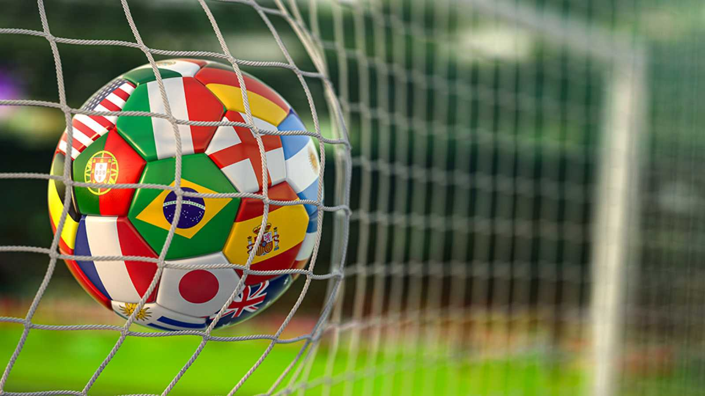

DEPORTES
BIENVENIDOS A: Ranking Mundial de Clubes FIFA 2022
Ranking Mundial de Clubes FIFA 2022 está liderado por el Real Madrid, el City y el Bayern El Real Madrid de Ancelotti, último campeón de la Champions League lidera el Ranking Mundial de los mejores equipos de fútbol que confecciona neogol.com basado en el sistema Elo Ratings que utiliza el portal de estadísticas footballdatabase.
Completan el podio el Manchester City y el Bayern Munich.
El Barça sube del puesto 9 al número 7.
El primer equipo latinoamericano que aparece en la lista es el Flamengo de Brasil en el puesto número 16.
Ranking FIFA Clubes 2022
|
#
|
EQUIPO
|
PUNTOS
|
|
1
|
Real Madrid
|
2049
|
| 2 |
Manchester City |
2040 |
| 3 |
Bayern Munich |
1971 |
| 4 |
Liverpool FC |
1957 |
| 5 |
SSC Napoli |
1945 |
| 6 |
PSG |
1913 |
| 7 |
Barcelona |
1908 |
| 8 |
AC Milan |
1908 |
| 9 |
Ajax Amsterdam |
1887 |
| 10 |
Arsenal |
1861 |
